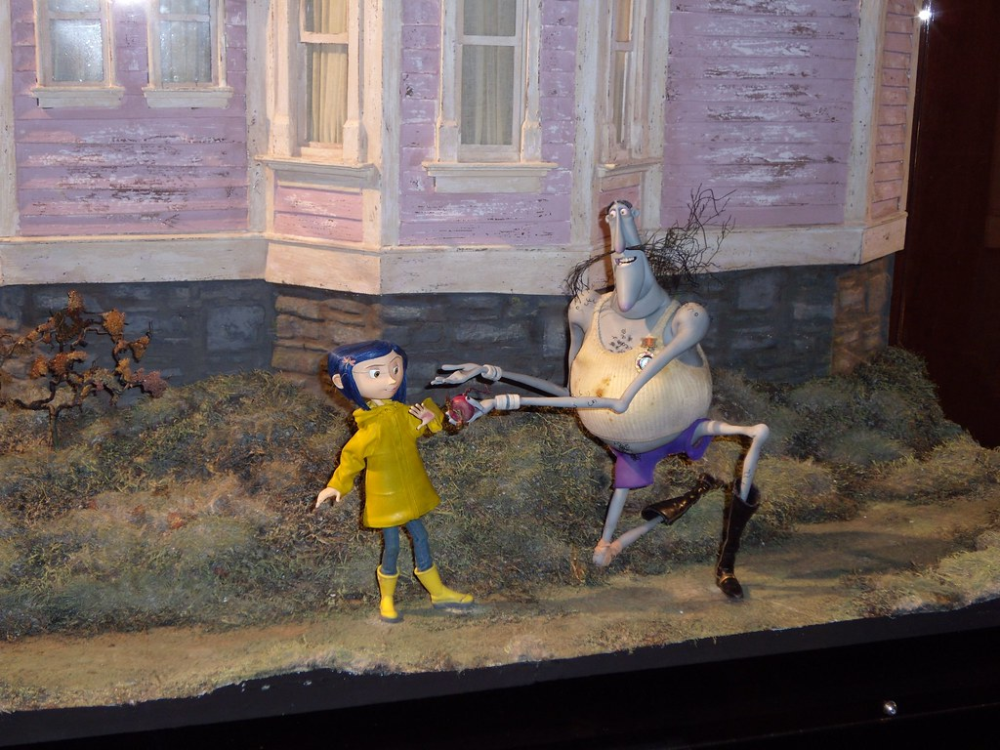
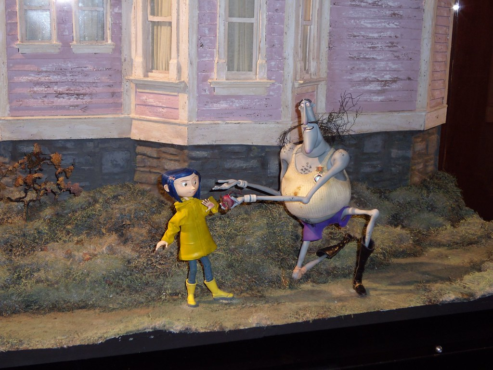
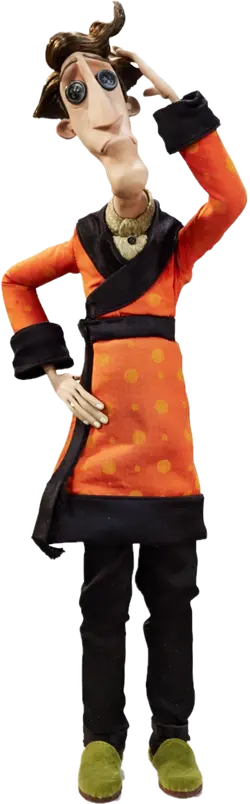
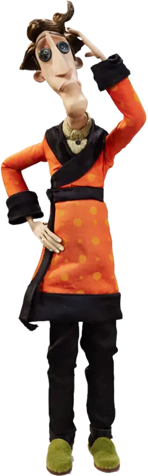

Una de las mejores obras creadas con stop-motion


 


Una obra maestra de la animación stop-motion, destacada por ser el primer largometraje diseñado en 3D estereoscópico.
Conoce a los personajes


Coraline
Wybie
Gato
 

Padre
Madre
Adentrate en Los Mundos de Coraline

Sinopsis
"Coraline es una joven aburrida que descubre que la pared tapiada tras una puerta de su piso conduce a otro mundo, con otra madre y otro padre. Todo comienza cuando la joven atraviesa una puerta secreta de su nuevo hogar y descubre una versión alternativa de su vida. A primera vista, esta realidad paralela es muy parecida a su vida real, pero mucho mejor."
Pero cuando esta fantástica aventura se vuelve peligrosa y sus falsos padres intentan retenerla para siempre, Coraline debe confiar en su ingenio, determinación y valentía para volver a casa y salvar a su familia.